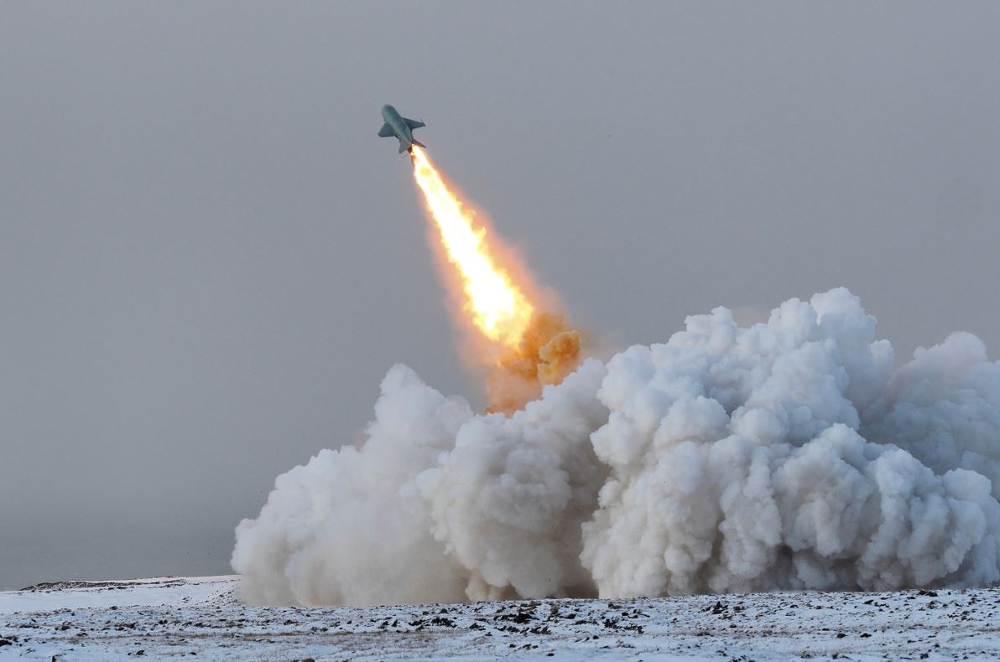
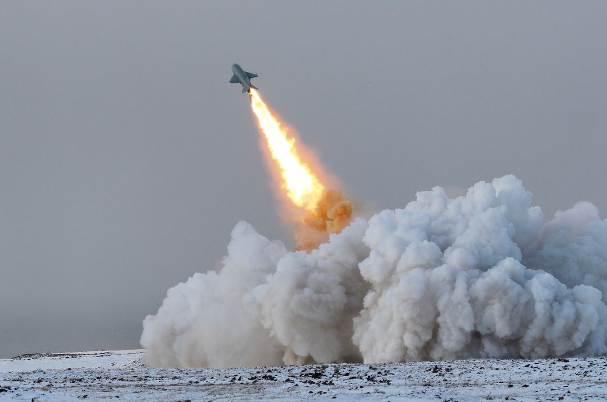

BioBattle
The Battle - Mechanics & Features of Gameplay
The Corona Star launches SARS spikes at a set interval. These make their way toward Earth.
The enzyme cannons on the destroyer Jonas Salk shoot RNA based on keyboard or mouse commands.
The RNA destroy the SARS spikes when hit and earn points for the captain of the Jonas Salk.
The Corona Start can shoot 50 SARS spike per game. The goal is to earn as high a score as possible
by destroying the spikes.
Genre: FPS – First-person Shooter
The player takes on the role of the Jonas Salk captain who must combat waves of SARS spikes fired from the Corona Star.
ESRB rating equivalent: E for everyone
 
